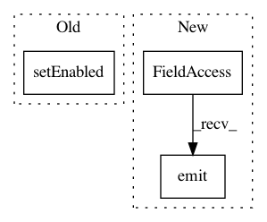

cf027c03269bb936071e040d68ece37eef0e5e01,ilastik/applets/tracking/conservation/conservationTrackingGui.py,ConservationTrackingGui,_onTrackButtonPressed,#ConservationTrackingGui#,90
Before Change
return
self._drawer.exportButton.setEnabled(True)
self._drawer.exportTifButton.setEnabled(True)
// self._drawer.lineageTreeButton.setEnabled(True)
self._setLayerVisible("Objects", False)
After Change
self._drawer.TrackButton.setEnabled(True)
self._drawer.TrackButton.setEnabled(False)
self.applet.progressSignal.emit(0)
self.applet.progressSignal.emit(-1)
req = Request( _track )
req.notify_failed( _handle_failure )
req.notify_finished( _handle_finished )
In pattern: SUPERPATTERN
Frequency: 3
Non-data size: 3
Instances
Project Name: ilastik/ilastik
Commit Name: cf027c03269bb936071e040d68ece37eef0e5e01
Time: 2013-08-01
Author: martin.schiegg@iwr.uni-heidelberg.de
File Name: ilastik/applets/tracking/conservation/conservationTrackingGui.py
Class Name: ConservationTrackingGui
Method Name: _onTrackButtonPressed
Project Name: ilastik/ilastik
Commit Name: 5877f32c73b2c12924acdbe36f6434f0278517a8
Time: 2013-07-26
Author: martin.schiegg@iwr.uni-heidelberg.de
File Name: ilastik/applets/tracking/chaingraph/chaingraphTrackingGui.py
Class Name: ChaingraphTrackingGui
Method Name: _onTrackButtonPressed
Project Name: ilastik/ilastik
Commit Name: 46df5d3879a2fadb3a5df9728954ad1b5fce663a
Time: 2012-07-10
Author: bergs@janelia.hhmi.org
File Name: ilastik-shell/applets/pixelClassification/pixelClassificationGui.py
Class Name: PixelClassificationGui
Method Name: onTrainAndPredictButtonClicked